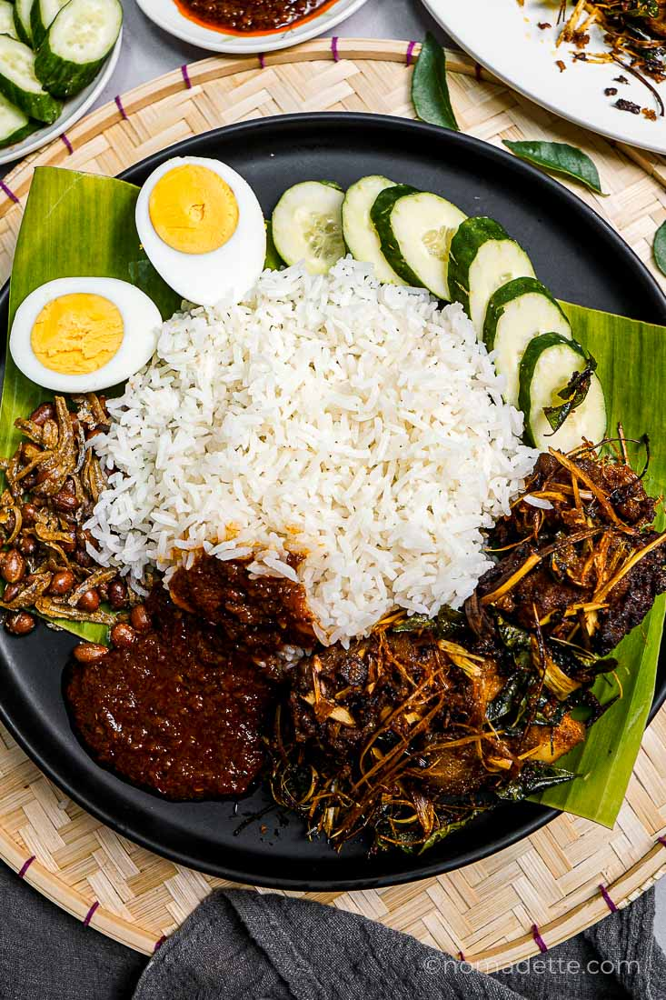

Nasi Lemak – Malaysia’s Iconic Coconut Rice
Fragrant rice cooked in coconut milk, served with spicy sambal and classic sides.


Introduction
Nasi Lemak is widely regarded as Malaysia’s national dish. The star is the aromatic rice, gently simmered with coconut milk and pandan leaves. It is traditionally served with a spicy sambal, crispy fried anchovies, roasted peanuts, sliced cucumber, and a hard-boiled or fried egg. Optional sides such as fried chicken, rendang, or squid elevate it into a full meal.
Main Ingredients
| Ingredient | Role |
|---|---|
| Rice + Coconut Milk | Creates the signature fragrance and richness |
| Pandan Leaves | Infuse floral aroma into the rice |
| Sambal | Chili paste providing heat, sweetness, and umami |
| Ikan Bilis & Peanuts | Crunchy, salty contrast |
| Cucumber | Freshness to balance the spice |
| Egg | Additional protein and creaminess |
History & Cultural Significance
Originating from Malay communities, Nasi Lemak began as a farmer’s breakfast and evolved into a beloved all-day meal found at roadside stalls, markets, school canteens, and modern cafés. It symbolizes comfort, affordability, and the multicultural spirit of Malaysian street food.
How to Make Nasi Lemak (At a Glance)
- Rinse rice; cook with coconut milk, water, salt, ginger, and pandan until fluffy.
- Simmer sambal by frying blended chilies, onions, and belacan; season with sugar and tamarind.
- Fry anchovies until crisp; roast peanuts lightly.
- Assemble with cucumber slices and egg; add optional fried chicken or rendang.
Fun Facts
- Banana-leaf wrapping not only looks authentic — it subtly perfumes the rice.
- Breakfast classic, midnight supper, or festive platter: it fits every occasion.